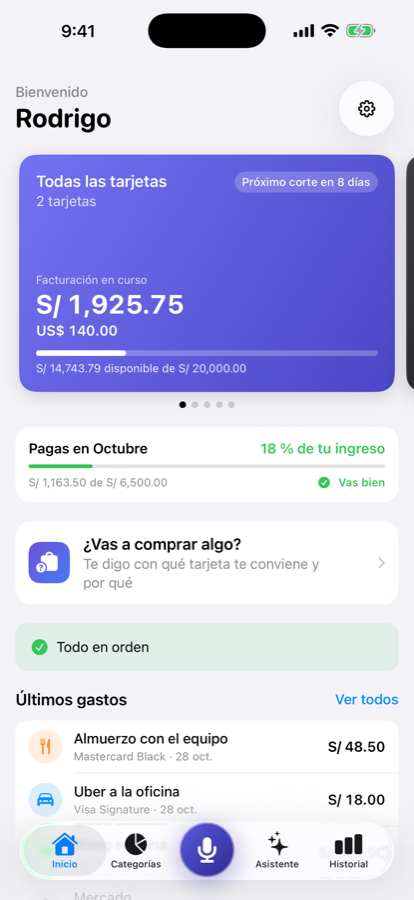
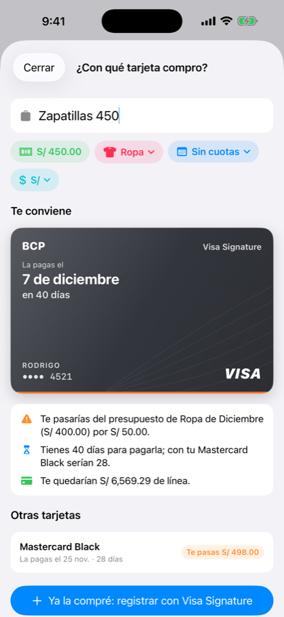
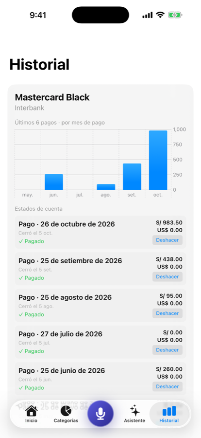
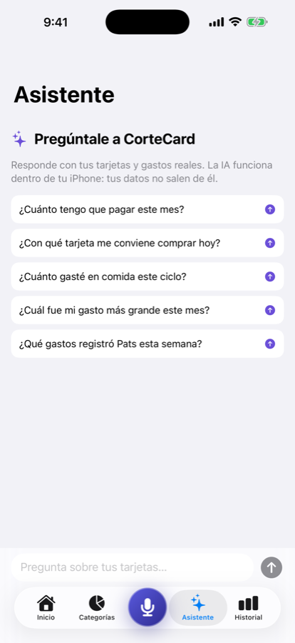

CorteCard te dice cuánto llevas gastado en el ciclo de cada tarjeta de crédito, cuánto pagarás en el próximo corte y hasta qué día tienes para hacerlo. Registra un gasto en segundos, por voz o escribiendo.
Descargar en App Store7 días gratis. Luego 3.99 US$ al mes o 29.99 US$ al año.

Pensada para tarjetas de crédito de Perú y Latinoamérica: ciclos de corte, fecha de pago, cuotas y más de una moneda.
Mantén presionado y dicta: “cuarenta soles en Wong con la Visa”. CorteCard entiende el monto, la tarjeta y la categoría.
Día de corte y día de pago por tarjeta. Si el pago cae en fin de semana o feriado, se mueve al día hábil correcto.
Reparte una compra mes a mes con los centavos exactos y revisa cómo quedaría tu próximo pago antes de comprar.
Un presupuesto mensual por categoría, tus ingresos y cuánto de tu mes ya está comprometido.
Soles y una segunda moneda con totales separados y tipo de cambio de referencia actualizado.
Sincroniza entre tus dispositivos y comparte los gastos con tu pareja. Widget, recordatorios y bloqueo con Face ID.
Capturas de la app en iPhone.




Lo que más nos preguntan.
No. Tú registras los gastos (por voz o escribiendo) y CorteCard hace las cuentas. No pide usuarios ni claves bancarias.
En tu iPhone y, si activas la sincronización, en tu propia cuenta de iCloud. Nadie más tiene acceso, ni siquiera nosotros.
Los primeros 7 días son gratis con todas las funciones. Después cuesta 3.99 US$ al mes o 29.99 US$ al año (precio local según tu país). Puedes cancelar cuando quieras desde los ajustes de tu cuenta de Apple.
Sí. La moneda principal se detecta por el país de tu iPhone y puedes elegir una segunda moneda.
Sí. Toca cualquier gasto en Inicio o en la lista de gastos para editarlo o borrarlo.
Disponible para iPhone en la App Store.
Descargar en App Store CorteCard
CorteCard